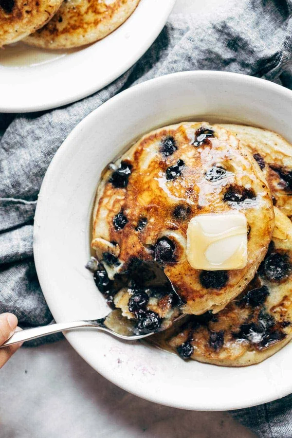

Pancakes

Description
You can fancify pancakes all you want, but can you really ever deny a butter-soaked blueberry pancake laced with maple syrup and dripping with hot, bursty blue juices?
If you can, you are probably not human.
Ingredients
- 3/4 cup milk
- 2 tablespoons white vinegar
- 1 cup flour
- 2 tablespoons sugar
- 1 teaspoon baking powder
- 1/2 teaspoon baking soda
- 1/2 teaspoon salt
- 1 egg
- 2 tablespoons melted butter
- 1+ cup fresh blueberries
Steps
- Mix the milk and vinegar and let it sit for a minute or two (you’re making “buttermilk” here).
- Whisk the dry ingredients together. Whisk the egg, milk, and melted butter into the dry ingredients until just combined.
- Heat a nonstick pan over medium heat. Melt a little smear of butter in the pan (essential for giving a yummy golden brown crust).
- Pour about 1/3 cup of batter into the hot skillet and spread it flat-like (it will be pretty thick). Arrange a few blueberries on top. Cook until you see little bubbles on top and the edges starting to firm up. Flip and cook for another 1-2 minutes until the pancakes are sky-high fluffy and cooked through.
- Serve with butter and maple syrup. But honestly, sometimes I just like to eat these plain. YUM, YUM, YUM.
Home